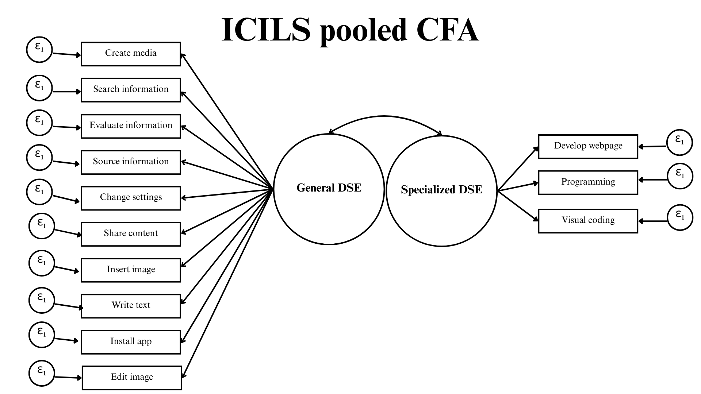
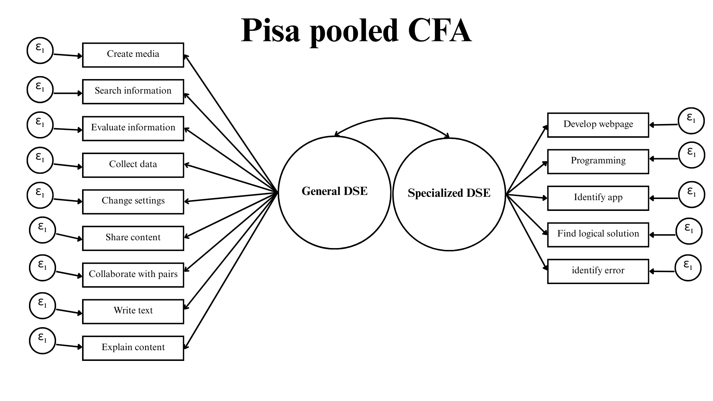

| Competence.area | Competence | ICILS.Code | ICILS.Label | PISA.Code | PISA.Label | Comparative.code | Type.of.DSE | PISA.CFA1 | PISA.CFA2 | ICILS.CFA1 |
|---|---|---|---|---|---|---|---|---|---|---|
| 1. Information and data literacy | 1.1 Navigate, search and filter data, information | IS3G24C | Search for relevant information for a school project on the internet | IC183Q01JA | Search for and find relevant information online | search_info | General | 0 | 1 | 1 |
| 1. Information and data literacy | 1.1 Navigate, search and filter data, information | IS3G24M | Find the original sources of information referred to in an article on the internet | source_info | General | 1 | ||||
| 1. Information and data literacy | 1.2 Evaluate data, information and digital content | IS3G24J | Judge whether you can trust information you find on the internet | IC183Q02JA | Assess the quality of information you found online | evaluate_info | General | 1 | 1 | 1 |
| 1. Information and data literacy | 1.3 Manage data, information and digital content | IC183Q08JA | Collect and record data (e.g., using data loggers, Google Forms, spreadsheets) | collect_data | General | 0 | 1 | |||
| 1. Information and data literacy | 1.3 Manage data, information and digital content | IS3G24I | Install a program or app | install_app | General | 1 | ||||
| 2. Communication and collaboration | 2.1 Interact through digital technologies/2.2 Share info | IC183Q03JA | Explain to other students how to share digital content online or on a school platform | explain_content | General | 0 | 1 | |||
| 2. Communication and collaboration | 2.1 Interact through digital technologies/2.2 Share info | IS3G24G | Upload text, images, or video to an online profile | IC183Q05JA | Share practical information with a group of students | share_content | General | 1 | 1 | 1 |
| 2. Communication and collaboration | 2.4 Collaborate through digital technologies | IC183Q04JA | Collaborate with other students on a group assignment | pair_collab | General | 1 | 1 | |||
| 3. Digital content creation | 3.1 Develop digital content | IS3G24B | Write or edit text for a school assignment | IC183Q07JA | Write or edit text for a school assignment | write_text | General | 1 | 1 | 1 |
| 3. Digital content creation | 3.1 Develop digital content / 3.2 Integrate content | IS3G24F | Create a multi-media presentation (with sound, pictures, or video) | IC183Q09JA | Create a multi-media presentation (with sound, pictures, or video) | create_media | General | 0 | 1 | 1 |
| 3. Digital content creation | 3.1 Develop digital content / 3.2 Integrate content | IS3G24H | Insert an image into a document or message | insert_image | General | 1 | ||||
| 3. Digital content creation | 3.2 Integrate and re-elaborate digital content | IS3G24A | Edit digital photographs or other graphic images | edit_image | General | 1 | ||||
| 3. Digital content creation | 3.1 Develop digital content | IS3G24D | Build or edit a webpage | IC183Q10JA | Create, update and maintain a webpage or a blog | develop_webpage | Specialized | 0 | 1 | 1 |
| 3. Digital content creation | 3.4 Programming | IS3G24K | Use a text-based programming language (e.g., Python, JavaScript...) | IC183Q14JA | Create a computer program (e.g., in Scratch, Python, Java) | programming | Specialized | 1 | 1 | 1 |
| 3. Digital content creation | 3.4 Programming | IS3G24L | Use visual coding (e.g., Scratch, Lego Mindstorms) to develop a simple computer program | visual_coding | Specialized | 1 | ||||
| 4. Safety | 4.1 Protect devices/ 4.2 Protect personal data and privacy | IS3G24E | Change the settings on a device to suit your needs and preferences | IC183Q12JA | Change the settings of a device or App in order to protect my data and privacy | change_settings | General | 0 | 1 | 1 |
| 5. Problem solving | 5.1 Solve technical problems | IC183Q15JA | Identify the source of an error in a software after considering a list of potential causes | identify_error | Specialized | 1 | 0 | |||
| 5. Problem solving | 5.2 Identify needs and technological responses | IC183Q13JA | Select the most efficient programme or App that allows me to carry out a specific task | identify_app | Specialized | | | 0 | |||
| 5. Problem solving | 5.3 Use digital technologies creatively | IC183Q16JA | Break down a problem and represent a solution as a series of logical steps, such as an algorithm | logical_solution | Specialized | 1 | 0 |
Digital Self-efficacy and gender in Large-scale assesments
Daniel Miranda1, Juan Carlos Castillo2, Nicolás Tobar3, Tomás Urzúa4 and Ismael Aguayo5
Abstract
…
1 Introduction
The mastery of digital technologies today requires more than physical access to devices or procedural knowledge of software; it increasingly involves attitudinal dispositions such as confidence, persistence, and the capacity to adapt in complex environments (europeancommissionjointresearchcentre_digcomp_2022?). Research in educational psychology has consistently highlighted self-efficacy as a key determinant of how individuals engage with technology. Defined as the belief in one’s ability to accomplish tasks and overcome obstacles in digital contexts, digital self-efficacy (DSE) has emerged as a central construct in understanding the development of digital competences (bandura_selfefficacy_1995?; ulfert-blank_assessing_2022?). Unlike purely skill-based measures, DSE captures both perceived capability and self-regulatory attitudes, making it particularly useful for explaining why some learners successfully navigate digital transformations while others struggle (schererRelationStudentsSocioeconomic2019?; rohatgiRoleICTSelfefficacy2016?).
Within this attitudinal dimension, evidence has consistently revealed gender-related patterns. Historically, women have reported lower levels of self-confidence and motivation in digital environments, especially in tasks associated with STEM or advanced technical applications (hargittaiDifferencesActualPerceived2006?; caiGenderAttitudesTechnology2017a?). However, more recent studies suggest a nuanced picture: while women continue to show lower self-efficacy in specialized digital domains such as programming or data analysis, they now frequently outperform or equal men in general DSE tasks related to information navigation, communication, and content creation (gebhardtGenderDifferencesComputer2019?). These shifts indicate that the relationship between gender and DSE is dynamic, contingent upon how digital tasks are conceptualized and measured.
Such attitudinal differences are also shaped by broader sociocultural and educational contexts. Cross-national studies show that the magnitude of the gender gap in digital self-efficacy varies considerably depending on how societies adopt and integrate technologies into everyday life (camposDigitalGenderGaps2024?; hatlevikStudentsICTSelfefficacy2018?). This contextual variability underscores the importance of measurement models that are not only valid within single cultural settings but also comparable across diverse populations. Without rigorous tests of measurement invariance, it is difficult to determine whether observed differences reflect substantive disparities or methodological artifacts (leitgob_measurement_2023?).
International large-scale assessments (ILSAs) provide an unparalleled opportunity to examine these issues. Studies such as the International Computer and Information Literacy Study (ICILS) and the Programme for International Student Assessment (PISA) include DSE measures, but they differ in important ways. PISA has traditionally adopted a unidimensional approach, aggregating digital self-confidence into a single scale (oecdPISA2022ICT2023?), whereas ICILS uses a bidimensional framework, distinguishing between general and specialized DSE (fraillon_preparing_2020?). Although ICILS and PISA differ in the wording of the items, if one examines the meaning of the items in depth, they are similar in terms of the tasks, which does not justify their different measurement strategies.
These differences are more than technical: they affect how countries governments interpret digital readiness and how gender disparities are identified. Against this background, the present study contributes by (i) testing whether a two-dimensional model of DSE —general and specialized— can be identified in both PISA and ICILS, (ii) evaluating its measurement invariance across gender and countries, and (iii) exploring determinants on gender differences at country level for both studies. By doing so, we aim to clarify whether differences in DSE are consistent across contexts or instead a product of how assessments operationalize the construct.
2 Self-efficacy and Digital Technologies
Self-efficacy is an orchestration or continued improvisation of multiple skills to manage the ever-changing situation around mastering an activity. As part of the forethought element of human agency, Self-efficacy is not the simple self-perception about the ability to execute an action, is concerned by judgments of how well one can execute courses of action required to deal with prospective situations. Self-efficacy is a type of self-assessment or expectatives to produce particular outcomes, crucial for reinforcing the mastery of the activity to which one is dedicated (banduraSelfefficacyMechanismHuman1982?; banduraSelfefficacyUnifyingTheory1977?).
This concept occupies a pivotal role in the causal structure of adaptation and change in learning contexts through its effect on other cognitive determinants. i) Efficacy plays a central role in the self-regulation of motivation through goal challenges and outcome expectations. ii) Efficacy determines the challenge to undertake, how much effort to expend in the endeavor, how long to persevere in the face of obstacles and failure, and whether failures are motivating or demoralizing. iii) Efficacy beliefs also play a key role in shaping the courses lives take by influencing the types of activities and environments people choose to get into. In synthesis, efficacy shapes the mindset, choices on path-life, and change of environments, crucial for creating fulfilling standards and obtaining performance accomplishments across learning activities (bandura_selfefficacy_1995?; steele_stereotype_1995?).
Self-efficacy has proven to be particularly relevant when it comes to digital technologies learning achievements. A whole thematic research agenda has opened up around self-efficacy role on the adoption and competences on digital technologies, although there are scattered efforts when it comes to measuring this construct.
The first antecedents of self-efficacy applied to digital issues resorted to ‘Computer self-efficacy’. (compeau_computer_1995?) proposed this early instrument focused on general computer domains and specific software application tasks. Defined as individual’s perceptions of his or her ability to use computers in the accomplishment of a task (ie., using a software package for data analysis, writing a mailmerge letter using a word processor), rather than reflecting simple component skills (ie., formatting diskettes, booting up a computer, using a specific software feature such as “bolding text” or “changing margin”). The computer self-efficacy construct was criticized and overcome for neglecting the changing dynamics of digital systems, which extender the digital enviroment over computers. The items of these scales tend to become outdated rapidly (durndellComputerSelfEfficacy2002?; weigel_technical_2014?).
While the increasing importance of interconnection with technologies, the focus turn on Internet Self-efficacy, which was defined as the general one’s judgment of confidence to accomplish different tasks related to online use of technologies. Internet Self-efficacy it does not refer to operative simple tasks, such as writing HTML, using a browser, or transferring files, for example. Instead, it assesses a person’s judgment of their ability to apply Internet skills in a more encompassing mode, such as finding information, social communication, or troubleshooting search problems. Internet self-efficacy may be distinguished from computer self-efficacy as the belief that one can successfully perform a distinct set of behaviors required to establish, maintain, and utilize effectively the Internet over and above basic personal computer skills (eastin_internet_2000a?; hsuInternetSelfefficacyElectronic2004?)
Although this new construct partially addressed the obsolescence of technologies, the set of digital activities was reduced to a particular domain, as is the case with the Internet and online interactions. An ICT Self-efficacy scale was proposed to comprise Computer and internet tasks on the same construct. ICT Self-efficacy construct considers digital information processing and content creation (aesaert_exploring_2014?; hatlevik_students_2018a?). Also, more advanced skills, such as programming or web development (rohatgi_role_2016?), started to be considered. Although to its new measures, ICT Self-efficacy usually presents unidimensional concepts or focuses on specific application domains (using ICT for work, school, or leisure) rather than competencies applicably for general life domains (ulfert-blank_assessing_2022?).
The current measures presented have common limitations in various ways. First, they often do not consider more recent frameworks of digital competences, such as the DigComp, regarding their level of generality, the competences included, and their multidimensionality. The DigComp describes digital competences in terms of general actions (i.e., tasks, functions), such as protecting devices or managing data, that can be applied to a heterogeneous group of individuals and are independent of specific digital systems. Most DSE scales are still system (e.g., specific computer software) or technology-specific (e.g., data storage such as floppy disc) and may thus become outdated. Second, critical competence areas, such as safety and problem-solving are often disregarded. Most of the scales focus on the informational, communicative, and creative aspects of the technologies without exhaustively capturing their dimensions of mastery. Third, the term DSE has been used interchangeably for measuring general competence beliefs (i.e., including items assessing self-concept, another competence belief) or actual proficiency. As a result, this has led to inconsistencies in the representation of the DSE construct in the literature. This is in spite of self-efficacy literature offering clear definitions of how measures should be constructed and its well-defined differentiation from related constructs (ulfert-blank_assessing_2022?).
(ulfert-blank_assessing_2022?) suggests to work with a unified construct denominated Digital Self-efficacy (hereinafter DSE) to reach a high-level research on this issue. Considering the gaps and inconsistencies in previous measurements, (ulfert-blank_assessing_2022?) points out that DSE construct have to (1) be theoretically-grounded multi-dimensional measures of DSE, encompassing diverse digital competence areas, (2) cover different functions and tasks of digital systems, (3) be independent of a specific digital system (e.g., Word), (4) be also labor or economical, not only educational-oriented.
3 Measuring Digital Self-efficacy
Generally, Self-efficacy has two ways to be studied: As perceived capabilities for task achievement and as a self-regulatory attitude. Task self-efficacy involves the beliefs that one can or cannot perform a single instance of a circumscribed behavior at different levels of performance. Self-regulatory self-efficacy is the confidence in how one can (or could) achieve tasks in the context of potential barriers. Studies focusing on capabilities usually emphasize the magnitude of the task, i.e., its degree of difficulty or complexity, and the linear achievement of the masterization process. By contrast, studies focused on attitudinal aspects give greater importance to persistance or resistance in the face of adversities presented in the enviroment involved in an activity (marlatt_selfefficacy_1995?; schwarzer_socialcognitive_2000?; williams_confounded_2016?).
Digital self-efficacy measurements are generally based on the linear achievement of tasks, more than the development of a strong confident self-attitude with technologies. Although some studies define DSE as a unidimensional construct, measuring individuals’ task achievement in using digital technologies without distinguishing between types of tools and/or levels of complexity (hatlevik_digital_2015?; rohatgiRoleICTSelfefficacy2016?), another range of studies adopt a bidimensional approach, which categorise as ‘general or basic DSE’ a first level of achievement considering widespread skills around handling information (browsing the web, evaluating the accuracy of information on the internet, installing programmes), communicating or collaborating through technologies (uploading content to social media, creating online profiles) and creating digital content (designing images, videos and text). A second level of achievement, jerarquically above the previous one, considers high technical expertise on computational tasks such as using programming languages, application development, or website management. Generally, is labelled as ‘specialized or advanced DSE’ (pashaCrossNationalVariationsSelfEfficacy2024?; gebhardtGenderDifferencesComputer2019?).
Both the unidimensional and the bidimensional approaches not only influence measurement instruments but also lead to different research findings: unidimensional models could underestimate the predictive power of DSE for complex digital enviroments, while bidimensional models offer greater explanatory precision but can introduce challenges such as construct overlap or reduced generalizability across contexts, limiting findings across educational systems and cultural contexts (aesaertAccuracyBiasICT2017?; siddiqThereGenderGap2019?; scherer_gender_2023?; camposDigitalGenderGaps2024?). Thus, the choice between unidimensional and bidimensional models of DSE is not merely theoretical, as it has significant implications for the validity, reliability, and utility of research on digital competence development.
However, although evidence shows that self-efficacy in technological area improvement does not follow a positive linear direction with performance, it is noteworthy that studies in the area of DSE focus closely on task achievement rather than on developing attitudes for dealing with situated difficult situations in digital learning processes (bandura_selfefficacy_1995?; fabia_students_2024?; mekheimer_technological_2025?).
4 PISA and ICILS different approachs
International Large-scale Assessment have become one of the most important types of studies in the field of education, characterized by the deployment of their surveys throughout the world, enabling cross-country analysis with large volumes of data. Recently, several ILSA studies have included sections on digital topics as it’s relevance in the current social life (Fraillon et al. 2013), where digital self-efficacy has earned its place.
There are two main studies that include digital topics in their surveys. First, International Computer and Information Literacy Study (ICILS), a studie belonging to the International Evaluation Assosiation (IEA). ICILS is a study focused on digital competences, which seeks to answer the question: How well are students prepared to study, work and live in a digital world? To this end, the study measures computer and information literacy achievement through a standardsized test. The second study is organized and executed by the OECD, called Programme for International Student Assessment (PISA). PISA is recognized by measuring the abilities of 15-year-old adolescents to use their knowledge in reading, mathematics and science to face challenges in real life. This ILSA stands out for the great thematic versatility of its questionnaires, including digital themes in the ICT familiarity module.
Each of these studies understands and, consequently, measures DSE differently. PISA has a one-dimensional approach, as can be inferred from a single battery consisting of 10 items. These items ask about different skills, from text editing in digital services to identifying the source of an error in software. In contrast, ICILS proposes a two-dimensional perspective of DSE, distinguishing between general DSE and specialized DSE. General dimension encompasses tasks that do not require in-depth knowledge of how digital devices work like search and find information on internet. Specialized DSE tasks requires greater mastery of digital skills, as they are more complex to perform like create a computer program.
Probably, these different considerations of DSE dimensions are due to the distinct approaches that both studies have towards self-efficacy concept. PISA presents greater contextualization in its items, defining the existence of obstacles in some and a procedural nature for overcoming them. ICILS opts for a battery focused on the operational aspect of task completion, whose items reflect greater relevance in the completion of a specific task rather than in carrying out an evaluative process of how to solve a problem. In this sense, PISA places greater emphasis on regulatory self-efficacy than ICILS, and therefore, it does not attempt to differentiate tasks based on their level of technical difficulty..
Despite distinct approach, the two studies contain tasks that can be categorized into a more general dimension and a specialized one. PISA and ICILS share items that focus on tasks with a low degree of technical complexity, such as searching for information online and/or editing text for a school subject, but both studies also include items that refer to the creation and maintenance of web pages or programming software.
Considering the previous statements, The first hypothesis is of this study is H1 It is possible to identify two latent dimensions of digital self-efficacy (general and specialized) based on related batteries and indicators included in large-scale assessments such as PISA and ICILS (bi-dimensional hypothesis).
The fact that PISA can be understood from a two-dimensional perspective poses a challenge in terms of scale stability, i.e., that these two dimensions are consistent with the data collected. Furthermore, the fact that studies understand self-efficacy under models with different dimensions prevents the comparability of the batteries from being studied. Therefore, with the intention of validating these constructs in the different countries where it is applied, the following hypothesis is proposed:
By the way, the second hypothesis is H2 The bi-dimensional measurement model of digital self-efficacy is equivalent across countries. Furthermore, the literature has shown that there are significant gender differences depending on the type of dimension (gebhardtGenderDifferencesComputer2019?), so it is also necessary to test the stability of the scales by gender. Then the third hypothesis: H3 The bi-dimensional measurement model of digital self-efficacy is equivalent between girls and boys
5 Data
This study draws on student data from the two International studies previously presented.
ICILS 2023 employed a two-stage cluster sampling approach. In the first stage, schools with students in the target grade were randomly selected using a probability proportional to size (PPS) method. In the second stage, one intact class was randomly selected within each sampled school, and all students in that class were invited to participate. The final ICILS 2023 sample consists of data from 132,889 grade 8 students from 5,299 schools across 34 countries and one benchmarking participant (Julian Fraillon, 2024).
PISA 2022 target population consists of 15-year-old students attending educational establishments, employing a two-stage stratified sampling design. In the first stage, schools were systematically selected with PPS from national sampling frames. In the second stage, a target number of students (typically 42) were randomly selected with equal probability from within each sampled school. The subset of data used in this research includes the 393,607 students clustered in 52 (mainly OECD) countries who completed the ICT questionnaire.
*Comentario Nico: Falta señalar la cantidad de escuelas que hay en PISA.
6 Variables
Both studies include a module on digital self-efficacy in their questionnaires. In ICILS the items are introduced with the phrase “How well can you do:” and recoded categories are 1 = I do not think I could do this; 2 = I have never done this, but I could work out how to do it; 3 = Moderately well; 4 = Very well. PISA module preface the items with the question “To what extent are you able to do the following tasks when using <digital resources>?”, where <digital resources> is a placeholder for a term adapted to the target culture. PISA recoded categories are 1 = I cannot do this; 2 = I struggle to do this on my own; 3 = I can do this with a bit of effort; 4 = I can easily do this. Responses as “I don’t know” was threated as missing values. A complete comparison of the items from both surveys is presented in Table 1, highlighting the concordances and distinctions between the studies, and the type of DSE we are assuming to match the item.
We also consider the three-digit ISO country code and the student’s sex (recoded as 1 = male and 2 = female) from both datasets.
¿Country level variables explanation? (GII, HDI, IDI, etc.)
7 Methods
The main analyses were performed within a Confirmatory Factor Analysis (CFA) framework to test the hypothesized two-factor structure of DSE (Brown, 2015). All data management and analyses were conducted using the R statistical environment. The CFA models were estimated with the lavaan package (Rosseel, 2012), and the final multilevel models were estimated with the lme4 package (Bates et al., 2015). Given the ordinal nature of the Likert-scale items, they were treated as ordered categorical variables in the CFA models. This specification handles missing data through pairwise deletion by default.
To evaluate the goodness-of-fit of the pooled CFA model, chi-square (χ²) test was used. However, due to the test’s sensitivity to large sample sizes, model evaluation primarily relied on a complementary set of fit indices: the Comparative Fit Index (CFI), the Tucker-Lewis Index (TLI), and the Root Mean Square Error of Approximation (RMSEA). Following common guidelines, CFI and TLI values of 0.95 or higher are considered indicative of excellent fit, while values between 0.90 and 0.95 are considered acceptable. For RMSEA, values of 0.06 or less indicate a close fit, while values up to 0.08 are considered adequate (Brown, 2015; Wang & Wang, n.d.).
To test the comparability of this measurement model across countries and genders, a series of Multi-Group Confirmatory Factor Analyses (MGCFA) was conducted to assess Measurement Equivalence or Invariance (ME/I) (e.g., Beaujean, 2014; Davidov et al., 2014). This procedure involves testing three sequential levels of invariance by imposing progressive restrictions: 1) configural invariance, which tests if the same factor structure holds for all groups; 2) metric invariance, which adds the constraint that factor loadings are equal across groups; and 3) scalar invariance, which further constrains item intercepts (or thresholds for ordinal items) to be equal (Cheung & Rensvold, 2002; Milfont & Fischer, 2010). The establishment of invariance between these nested models was evaluated by examining the change in CFI (ΔCFI) and RMSEA (ΔRMSEA). Specifically, for metric (weak) invariance, a change in CFI of ≥ -0.004 and a change in RMSEA of ≤ 0.050 were considered acceptable. For scalar (strong) invariance, a ΔCFI of ≥ -0.004 and a ΔRMSEA of ≤ 0.010 were considered adequate (Rutkowski & Svetina, 2017). Furthermore, a more demanding criterion of ΔCFI ≥ -0.002 was also considered, as suggested for models with three or fewer dimensions (Rutkowski & Svetina, 2017). Achieving scalar invariance is a prerequisite for further analysis.
Upon establishing scalar invariance, latent mean scores of General and Specialized DSE country distribution are estimated. Then the magnitude of the DSE gender gap is visualized for each country. Finally, correlations between country-level gender gap and a set of national indicators is estimated to explore most salients contextual predictors.
7.1 Modelo de primer orden digcomp
Change settings fue eliminado ya que está solo en su categioría (Safety) Hay una warning problemática al correr el modelo inicial:
model_cfa2nd_p <- '
info_data =~ search_info + evaluate_info + collect_data
communication =~ explain_content + share_content + pair_collab
content_creation_gen =~ write_text + create_media
content_creation_spec =~ programming + develop_webpage
problem_solving =~ identify_error + logical_solution + identify_app
'
1: lavaan->lav_object_post_check():
covariance matrix of latent variables is not positive definite ; use lavInspect(fit, "cov.lv") to
investigate.
Warning message:
lavaan->lav_start_check_cov():
starting values imply a correlation larger than 1; variables involved are: content_creation_spec
problem_solving Si se agrupan las variables de especializada (especificando las otras categorías por digcomp) la warning desaparece. Identify_app es la más problemárica al anaĺizar los modindices. Si se elimina mejora el rmsea de 0.15 a 0.127. Luego develop webpage genera problemas, si se elimina mejora el rmsea a 0.086 (bastante mejor!). Luego collect_data, lo cual nos haría pasar los criterios mínimos (RMSEA = 0.061).
Code
model_cfa_p1 <- '
info_data =~ search_info + evaluate_info
communication =~ explain_content + share_content + pair_collab
content_creation_gen =~ write_text + create_media
spec_dse =~ programming + logical_solution + identify_error
'
m_cfa_p1 <- cfa(model = model_cfa_p1,
data = pisa,
estimator = "WLSMV",
ordered = T)
standardizedsolution(m_cfa_p1) %>%
filter(op == "=~") %>%
select(Factor = lhs, Indicator = rhs, `Loading (DWLS)` = est.std) Factor Indicator Loading..DWLS.
1 info_data search_info 0.94
2 info_data evaluate_info 0.93
3 communication explain_content 0.90
4 communication share_content 0.93
5 communication pair_collab 0.91
6 content_creation_gen write_text 0.92
7 content_creation_gen create_media 0.83
8 spec_dse programming 0.87
9 spec_dse logical_solution 0.92
10 spec_dse identify_error 0.94Code
fit_pisa1 <- fitMeasures(m_cfa_p1,
c("chisq", "df", "pvalue", "cfi", "tli", "rmsea", "srmr"))
knitr::kable(fit_pisa1, digits = 3)| x | |
|---|---|
| chisq | 27015.080 |
| df | 29.000 |
| pvalue | 0.000 |
| cfi | 0.999 |
| tli | 0.998 |
| rmsea | 0.061 |
| srmr | 0.041 |
Code
modindices(m_cfa_p1, sort = TRUE, maximum.number = 5) lhs op rhs mi epc sepc.lv sepc.all sepc.nox
114 spec_dse =~ create_media 11791 -0.30 -0.27 -0.27 -0.27
113 spec_dse =~ write_text 11790 0.34 0.29 0.29 0.29
95 communication =~ write_text 11481 -1.67 -1.51 -1.51 -1.51
96 communication =~ create_media 11480 1.52 1.37 1.37 1.37
88 info_data =~ write_text 6832 -0.85 -0.81 -0.81 -0.81Code
lavInspect(m_cfa_p1, "cov.lv") inf_dt cmmnct cntn__ spc_ds
info_data 0.89
communication 0.79 0.81
content_creation_gen 0.78 0.78 0.84
spec_dse 0.38 0.38 0.47 0.767.2 Modelo general y especializada
Este modelo no tiene warnings. Partimos con el mismo rmsea de 0.15.
# Modelo inicial
model_cfa_p2 <- '
gen_dse =~ search_info + evaluate_info + collect_data +
explain_content + share_content + pair_collab +
write_text + create_media + change_settings
spec_dse =~ programming + develop_webpage + identify_error + identify_app + logical_solution
'Identify app es medido por gen_dse (por eso quizás da tantos problemas en ambos modelos). Al eliminarlo el rmsea mejora a 0.12. La siguiente variable que trae problemas es nuevamente develop_webpage, que al eliminarse mejora el rmsea a 0.09. Luego, modindices da señales de que collect_data, change_settings, search_info y create_media también podrían ser medidos por spec_dse. Borrando collect_data el modelo queda con 0.086, y eliminando change_settings queda con 0.08, ajustando apenas, el modelo de arriba parece reflejar mejor la data.
Code
model_cfa_p2 <- '
gen_dse =~ search_info + evaluate_info +
explain_content + share_content + pair_collab +
write_text + create_media
spec_dse =~ programming + identify_error + logical_solution
'
m_cfa_p2 <- cfa(model = model_cfa_p2,
data = pisa,
estimator = "WLSMV",
ordered = T)
standardizedsolution(m_cfa_p2) %>%
filter(op == "=~") %>%
select(Factor = lhs, Indicator = rhs, `Loading (DWLS)` = est.std) Factor Indicator Loading..DWLS.
1 gen_dse search_info 0.91
2 gen_dse evaluate_info 0.90
3 gen_dse explain_content 0.89
4 gen_dse share_content 0.91
5 gen_dse pair_collab 0.90
6 gen_dse write_text 0.89
7 gen_dse create_media 0.81
8 spec_dse programming 0.87
9 spec_dse identify_error 0.94
10 spec_dse logical_solution 0.92Code
fit_pisa2 <- fitMeasures(m_cfa_p2,
c("chisq", "df", "pvalue", "cfi", "tli", "rmsea", "srmr"))
knitr::kable(fit_pisa2, digits = 3)| x | |
|---|---|
| chisq | 54412.353 |
| df | 34.000 |
| pvalue | 0.000 |
| cfi | 0.997 |
| tli | 0.996 |
| rmsea | 0.080 |
| srmr | 0.051 |
Code
modindices(m_cfa_p2, sort = TRUE, maximum.number = 5) lhs op rhs mi epc sepc.lv sepc.all sepc.nox
85 spec_dse =~ create_media 21554 -0.29 -0.25 -0.25 -0.25
86 search_info ~~ evaluate_info 14865 -0.12 -0.12 -0.69 -0.69
79 spec_dse =~ search_info 7839 0.23 0.20 0.20 0.20
126 create_media ~~ identify_error 6476 -0.14 -0.14 -0.72 -0.72
127 create_media ~~ logical_solution 6399 -0.14 -0.14 -0.63 -0.637.3 Modelo tomando en cuenta variables ambiguas
Mirando los datos, creo que parece haber una “tercera dimensión”, como una autoeficacia digital intermedia, compuesta por identificar apps, desarrollar páginas webs, recolectar data con formularios y cambiar configuraciones para proteger la privacidad (las variables que no ajustaban en los otros modelos). Este modelo es el mejor por lejos, al primer intento da 0.089 en rmsea. Analicemos los modindices. Quizás si desde esto dividimos gen_dse una vez más en algo que tiene sentido logramos un mejor ajuste.
Code
model_cfa_p3 <- '
gen_dse =~ search_info + evaluate_info +
explain_content + share_content + pair_collab +
write_text + create_media
semi_dse =~ collect_data + develop_webpage + identify_app + change_settings
spec_dse =~ programming + identify_error + logical_solution
'
m_cfa_p3 <- cfa(model = model_cfa_p3,
data = pisa,
estimator = "WLSMV",
ordered = T)
standardizedsolution(m_cfa_p3) %>%
filter(op == "=~") %>%
select(Factor = lhs, Indicator = rhs, `Loading (DWLS)` = est.std) Factor Indicator Loading..DWLS.
1 gen_dse search_info 0.91
2 gen_dse evaluate_info 0.90
3 gen_dse explain_content 0.90
4 gen_dse share_content 0.91
5 gen_dse pair_collab 0.89
6 gen_dse write_text 0.90
7 gen_dse create_media 0.87
8 semi_dse collect_data 0.86
9 semi_dse develop_webpage 0.81
10 semi_dse identify_app 0.87
11 semi_dse change_settings 0.86
12 spec_dse programming 0.88
13 spec_dse identify_error 0.94
14 spec_dse logical_solution 0.92Code
fit_pisa3 <- fitMeasures(m_cfa_p3,
c("chisq", "df", "pvalue", "cfi", "tli", "rmsea", "srmr"))
knitr::kable(fit_pisa3, digits = 3)| x | |
|---|---|
| chisq | 139438.506 |
| df | 74.000 |
| pvalue | 0.000 |
| cfi | 0.996 |
| tli | 0.995 |
| rmsea | 0.089 |
| srmr | 0.053 |
Code
modindices(m_cfa_p3, sort = TRUE, maximum.number = 5) lhs op rhs mi epc sepc.lv sepc.all sepc.nox
121 semi_dse =~ create_media 40590 -0.85 -0.73 -0.73 -0.73
131 spec_dse =~ create_media 36809 -0.36 -0.31 -0.31 -0.31
133 spec_dse =~ develop_webpage 35537 -0.45 -0.40 -0.40 -0.40
109 gen_dse =~ develop_webpage 32965 0.69 0.62 0.62 0.62
136 search_info ~~ evaluate_info 18880 -0.12 -0.12 -0.68 -0.687.4 ICILS digcomp model
En este modelo, ni change settings (que en icils no refiere a privacidad) ni share content pueden entrar ya que estan “solas”.
model_cfa_i1 <- '
info_data =~ search_info + evaluate_info + install_app + source_info
content_creation_gen =~ write_text + create_media + insert_image + edit_image
content_creation_spec =~ programming + visual_coding + develop_webpage
'
Warning message:
lavaan->lav_object_post_check():
covariance matrix of latent variables is not positive definite ; use lavInspect(fit, "cov.lv") to
investigate. El modelo inicial, aparte que no ajusta (RMSEA = 0.125) arroja esas warnings problemáticas. Si se elimina source_info, pasamos a rmsea de .104, y luego insert_info llega a 0.1, y write_text a 0.074, ajustando el modelo.
Code
model_cfa_i1 <- '
info_data =~ search_info + evaluate_info + install_app
content_creation_gen =~ create_media + edit_image
content_creation_spec =~ programming + visual_coding + develop_webpage
'
m_cfa_i1 <- cfa(model = model_cfa_i1,
data = icils23_proc,
estimator = "WLSMV",
ordered = T)
standardizedsolution(m_cfa_i1) %>%
filter(op == "=~") %>%
select(Factor = lhs, Indicator = rhs, `Loading (DWLS)` = est.std) Factor Indicator Loading..DWLS.
1 info_data search_info 0.74
2 info_data evaluate_info 0.77
3 info_data install_app 0.71
4 content_creation_gen create_media 0.76
5 content_creation_gen edit_image 0.68
6 content_creation_spec programming 0.83
7 content_creation_spec visual_coding 0.80
8 content_creation_spec develop_webpage 0.72Code
fit_icils <- fitMeasures(m_cfa_i1,
c("chisq", "df", "pvalue", "cfi", "tli", "rmsea", "srmr"))
knitr::kable(fit_icils, digits = 3)| x | |
|---|---|
| chisq | 10495.438 |
| df | 17.000 |
| pvalue | 0.000 |
| cfi | 0.988 |
| tli | 0.980 |
| rmsea | 0.074 |
| srmr | 0.049 |
Code
modindices(m_cfa_i1, sort = TRUE, maximum.number = 5) lhs op rhs mi epc sepc.lv sepc.all
107 programming ~~ visual_coding 5921 -0.31 -0.31 -0.92
76 content_creation_gen =~ develop_webpage 5708 -0.56 -0.42 -0.42
70 info_data =~ develop_webpage 4358 -0.35 -0.26 -0.26
78 content_creation_spec =~ evaluate_info 3546 -0.34 -0.28 -0.28
109 visual_coding ~~ develop_webpage 2225 0.17 0.17 0.42
sepc.nox
107 -0.92
76 -0.42
70 -0.26
78 -0.28
109 0.427.5 ICILS general-specialized model
model_cfa_i2 <- '
gen_dse =~ search_info + source_info + evaluate_info + install_app +
share_content + write_text +
create_media + insert_image + edit_image + change_settings
spec_dse =~ programming + visual_coding + develop_webpage
'Este parte mejor y sin warning (RMSEA = 0.107), eliminando source_info pasa a 0.09, y luego develop_webpage pasa a 0.079 (ajusta!). Una cosa curiosa es que si añadimos source_info a la dimensión especializada aumenta un poco el ajuste (0.094)
Code
model_cfa_i2 <- '
gen_dse =~ search_info + evaluate_info + install_app +
share_content + write_text +
create_media + insert_image + edit_image + change_settings
spec_dse =~ programming + visual_coding
'
m_cfa_i2 <- cfa(model = model_cfa_i2,
data = icils23_proc,
estimator = "WLSMV",
ordered = T)
standardizedsolution(m_cfa_i2) %>%
filter(op == "=~") %>%
select(Factor = lhs, Indicator = rhs, `Loading (DWLS)` = est.std) Factor Indicator Loading..DWLS.
1 gen_dse search_info 0.78
2 gen_dse evaluate_info 0.67
3 gen_dse install_app 0.74
4 gen_dse share_content 0.76
5 gen_dse write_text 0.79
6 gen_dse create_media 0.71
7 gen_dse insert_image 0.83
8 gen_dse edit_image 0.64
9 gen_dse change_settings 0.71
10 spec_dse programming 0.84
11 spec_dse visual_coding 0.84Code
fit_icils <- fitMeasures(m_cfa_i2,
c("chisq", "df", "pvalue", "cfi", "tli", "rmsea", "srmr"))
knitr::kable(fit_icils, digits = 3)| x | |
|---|---|
| chisq | 29704.318 |
| df | 43.000 |
| pvalue | 0.000 |
| cfi | 0.986 |
| tli | 0.982 |
| rmsea | 0.079 |
| srmr | 0.063 |
Code
modindices(m_cfa_i2, sort = TRUE, maximum.number = 5) lhs op rhs mi epc sepc.lv sepc.all sepc.nox
97 search_info ~~ write_text 5345 -0.18 -0.18 -0.46 -0.46
90 spec_dse =~ create_media 3641 -0.25 -0.21 -0.21 -0.21
91 spec_dse =~ insert_image 3371 0.30 0.25 0.25 0.25
92 spec_dse =~ edit_image 2768 -0.22 -0.19 -0.19 -0.19
85 spec_dse =~ search_info 2610 0.26 0.22 0.22 0.227.6 ICILS 3 factor model
Igualmente, probamos el modelo con tres factores. Este modelo ajusta desde el inicio con 0.079, pero tiene la warning de antes.
model_cfa_i3 <- '
gen_dse =~ search_info + evaluate_info + install_app +
share_content + write_text +
create_media + insert_image + edit_image + change_settings
semi_dse =~ develop_webpage + source_info
spec_dse =~ programming + visual_coding
'
Warning message:
lavaan->lav_object_post_check():
covariance matrix of latent variables is not positive definite ; use lavInspect(fit, "cov.lv") to
investigate. Code
model_cfa_i3 <- '
gen_dse =~ search_info + evaluate_info + install_app +
share_content + write_text +
create_media + insert_image + edit_image + change_settings
semi_dse =~ develop_webpage + source_info
spec_dse =~ programming + visual_coding
'
m_cfa_i3 <- cfa(model = model_cfa_i3,
data = icils23_proc,
estimator = "WLSMV",
ordered = T)
standardizedsolution(m_cfa_i3) %>%
filter(op == "=~") %>%
select(Factor = lhs, Indicator = rhs, `Loading (DWLS)` = est.std) Factor Indicator Loading..DWLS.
1 gen_dse search_info 0.77
2 gen_dse evaluate_info 0.69
3 gen_dse install_app 0.72
4 gen_dse share_content 0.76
5 gen_dse write_text 0.78
6 gen_dse create_media 0.73
7 gen_dse insert_image 0.81
8 gen_dse edit_image 0.66
9 gen_dse change_settings 0.73
10 semi_dse develop_webpage 0.65
11 semi_dse source_info 0.69
12 spec_dse programming 0.85
13 spec_dse visual_coding 0.83Code
fit_icils3 <- fitMeasures(m_cfa_i3,
c("chisq", "df", "pvalue", "cfi", "tli", "rmsea", "srmr"))
knitr::kable(fit_icils3, digits = 3)| x | |
|---|---|
| chisq | 42082.057 |
| df | 62.000 |
| pvalue | 0.000 |
| cfi | 0.984 |
| tli | 0.980 |
| rmsea | 0.079 |
| srmr | 0.064 |
Code
modindices(m_cfa_i3, sort = TRUE, maximum.number = 5) lhs op rhs mi epc sepc.lv sepc.all sepc.nox
130 search_info ~~ write_text 6550 -0.20 -0.20 -0.49 -0.49
122 spec_dse =~ insert_image 5662 0.34 0.29 0.29 0.29
111 semi_dse =~ insert_image 5447 0.60 0.39 0.39 0.39
121 spec_dse =~ create_media 5296 -0.27 -0.23 -0.23 -0.23
110 semi_dse =~ create_media 5145 -0.48 -0.31 -0.31 -0.31Code
lavInspect(m_cfa_i3, "cov.lv") gen_ds sem_ds spc_ds
gen_dse 0.59
semi_dse 0.40 0.43
spec_dse 0.32 0.53 0.73

8
Bates, D., Mächler, M., Bolker, B., & Walker, S. (2015). Fitting Linear Mixed-Effects Models Using lme4. Journal of Statistical Software, 67, 1–48. https://doi.org/10.18637/jss.v067.i01
Beaujean, A. A. (2014). Latent variable modeling using r: A step-by-step guide. Routledge.
Brown, T. A. (2015). Confirmatory factor analysis for applied research: Second edition. Guildford. https://www.guilford.com/books/Confirmatory-Factor-Analysis-for-Applied-Research/Timothy-Brown/9781462515363?srsltid=AfmBOoptcYVzN648w0qDYYf-WNzkgmnWX7pgIT58ThKvyohpWlg1F21S
Cheung, G. W., & Rensvold, R. B. (2002). Evaluating goodness-of-fit indexes for testing measurement invariance. Structural Equation Modeling, 9(2), 233–255. https://doi.org/10.1207/S15328007SEM0902_5
Davidov, E., Meuleman, B., Cieciuch, J., Schmidt, P., & Billiet, J. (2014). Measurement equivalence in cross-national research. Annual Review of Sociology, 40, 55–75. https://doi.org/10.1146/annurev-soc-071913-043137
Julian Fraillon, E. (2024). An International Perspective on Digital Literacy: Results from ICILS 2023. https://eric.ed.gov/?id=ED661744
Milfont, T. L., & Fischer, R. (2010). Testing measurement invariance across groups: applications in cross-cultural research. International Journal of Psychological Research, 3(1), 111–130. https://doi.org/10.21500/20112084.857
Rosseel, Y. (2012). lavaan: An R Package for Structural Equation Modeling. Journal of Statistical Software, 48, 1–36. https://doi.org/10.18637/jss.v048.i02
Rutkowski, L., & Svetina, D. (2017). Measurement invariance in international surveys: Categorical indicators and fit measure performance. Applied Measurement in Education, 30(1), 39–51. https://doi.org/10.1080/08957347.2016.1243540
Wang, J., & Wang, X. (n.d.). Structural equation modeling: Applications using mplus. John Wiley & Sons, Ltd. http://dx.doi.org/10.1002/9781118356258
Footnotes
Psychology Department, University of Chile. Associate researcher at Center of Social Cohesion and Conflict studies (COES). Adjunct researcher on NUDOS. damiran1@uc.cl.↩︎
Sociology Department, University of Chile. Principal researcher on Millennium Nucleus on Digital Inequalities and Opportunities (NUDOS) and at the Center of Social Cohesion and Conflict studies (COES). juancastillov@uchile.cl - jc-castillo.com↩︎
Research Assistant on NUDOS. Msc (c) Political Science, Faculty of Government, University of Chile. nicolas.tobar@ug.uchile.cl.↩︎
Research Assistant on NUDOS. Msc (c) Social Sciences, Sociology Department, University of Chile. tomas.urzua@ug.uchile.cl↩︎
Research Assistant on NUDOS. Bsc (c) Sociology, Sociology Department, University of Chile. ismael.aguayo@ug.uchile.cl↩︎